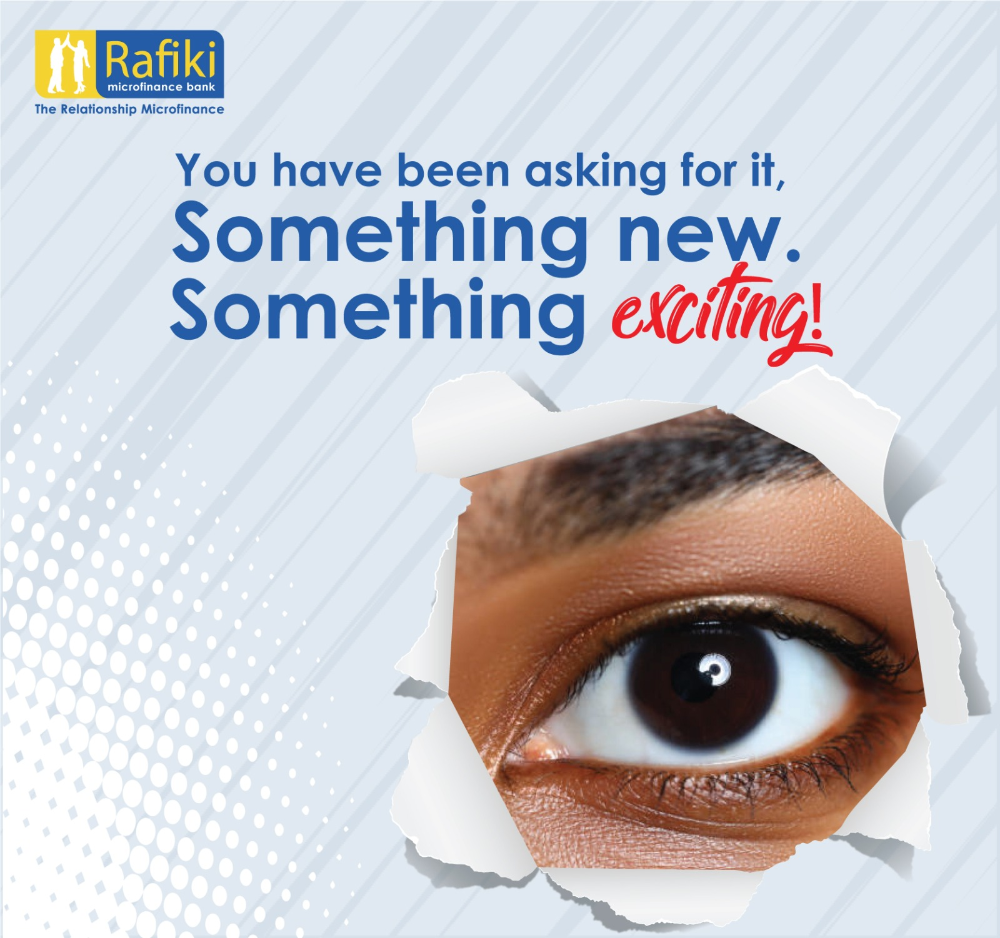
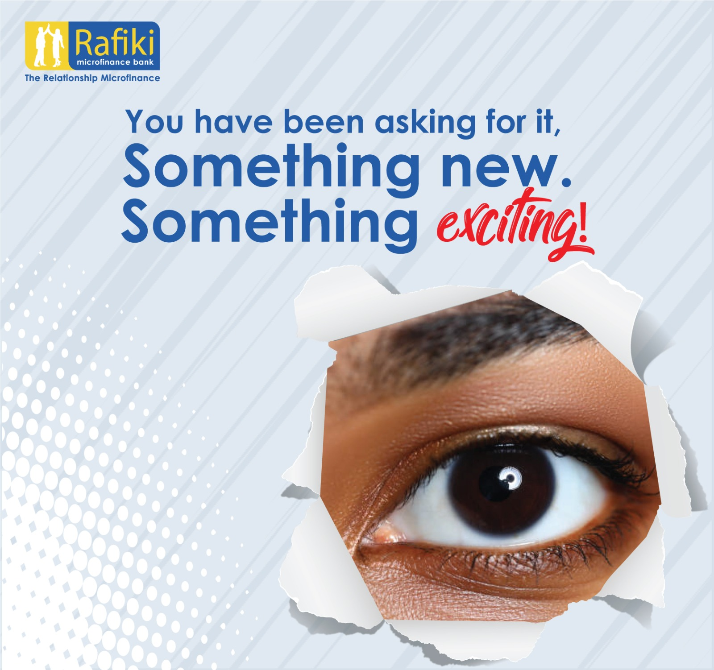

Banner was for Palbina Travelling Company that needed a poster for the Easter holiday. I came up with the below design because I wanted to bring out the picture of how beautiful the place is and bring out the venture aspect and how the place is environmental friendly to any audience.
 
